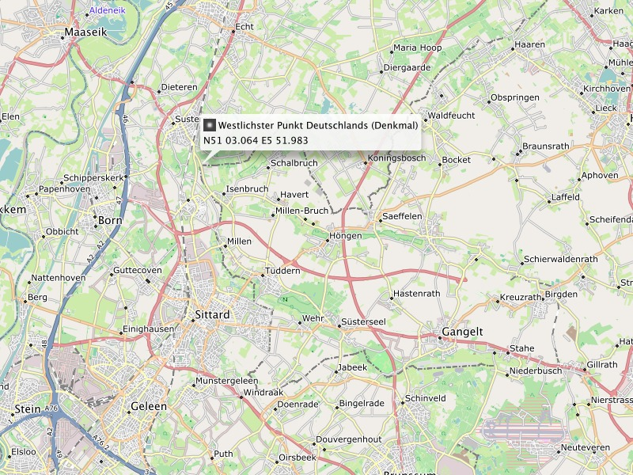
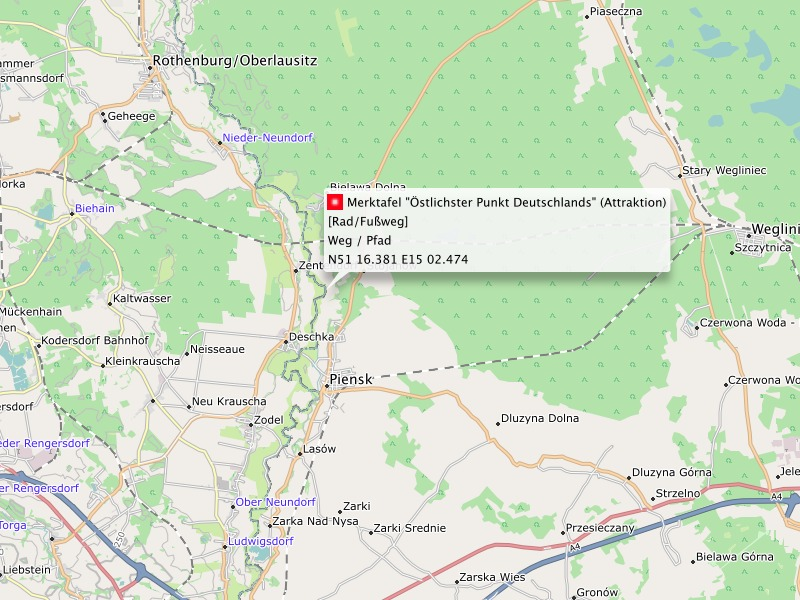

Angaben gemäß § 5 TMG:
Klaus Tockloth, Im Seihof 34
D-48161 Münster, Germany
eMail: freizeitkarte@googlemail.com
An der Ausarbeitung der Freizeitkarten arbeiten aktiv mit:
- Ludwich (Qualitätssicherung, OSM-Datenpflege)
- Johannes Hahn (Routing)
- Roman (Wintersport, Kartendesign "outdoor")
- Christian Kraemer (Administration Webserver)
- Roman (Wintersport, Kartendesign "outdoor")
- Patrik Brunner (Internationalisierung, Entwicklungsumgebung)
- Stephan Oppermann (Kartendesigns "contrast" und "small")
Neuigkeiten zum Kartenprojekt:
Hier gibt es Informationen zu den Freizeitkarten ... meist Hinweise zur Veröffentlichung neuer Kartenausgaben.
@freizeitkarte folgen
Unterstütze dieses Kartenprojekt:
Wenn du aus den Freizeitkarten etwas Positives für dich
ableiten konntest, dann denke doch einmal über eine kleine
Unterstützung nach. Betrachte dies nicht als Kommerzialisierung,
sondern eher wie eine Einladung zu einer "Tasse Tee und einem
Stück Kuchen".
Spendenmöglichkeit durch Überweisung auf ein deutsches Bankkonto:
Kontoinhaber: Klaus Tockloth
Kreditinstitut: Volksbank Münster eG
Bankleitzahl: 40160050
Konto: 1701199600
BIC: GENODEM1MSC
IBAN: DE48401600501701199600
Spendenmöglichkeit durch Geldtransfer via PayPal:
Danke für deine Unterstützung - du hilfst hierdurch mit das Kartenprojekt fortzuführen.

Kartendarstellung in BaseCamp: Der westlichste Landpunkt Deutschlands - markiert durch den Grenzstein 309 B in der Gemeinde Selfkant.
Haftung für Inhalte:
Die Inhalte unserer Seiten wurden mit größter Sorgfalt erstellt.
Für die Richtigkeit, Vollständigkeit und Aktualität der Inhalte
können wir jedoch keine Gewähr übernehmen. Als Diensteanbieter
sind wir gemäß § 7 Abs.1 TMG für eigene Inhalte auf diesen
Seiten nach den allgemeinen Gesetzen verantwortlich. Nach §§ 8
bis 10 TMG sind wir als Diensteanbieter jedoch nicht
verpflichtet, übermittelte oder gespeicherte fremde
Informationen zu überwachen oder nach Umständen zu forschen, die
auf eine rechtswidrige Tätigkeit hinweisen. Verpflichtungen zur
Entfernung oder Sperrung der Nutzung von Informationen nach den
allgemeinen Gesetzen bleiben hiervon unberührt. Eine
diesbezügliche Haftung ist jedoch erst ab dem Zeitpunkt der
Kenntnis einer konkreten Rechtsverletzung möglich. Bei
Bekanntwerden von entsprechenden Rechtsverletzungen werden wir
diese Inhalte umgehend entfernen.
Haftung für Links:
Unser Angebot enthält Links zu externen Webseiten Dritter, auf
deren Inhalte wir keinen Einfluss haben. Deshalb können wir für
diese fremden Inhalte auch keine Gewähr übernehmen. Für die
Inhalte der verlinkten Seiten ist stets der jeweilige Anbieter
oder Betreiber der Seiten verantwortlich. Die verlinkten Seiten
wurden zum Zeitpunkt der Verlinkung auf mögliche Rechtsverstöße
überprüft. Rechtswidrige Inhalte waren zum Zeitpunkt der
Verlinkung nicht erkennbar. Eine permanente inhaltliche
Kontrolle der verlinkten Seiten ist jedoch ohne konkrete
Anhaltspunkte einer Rechtsverletzung nicht zumutbar. Bei
Bekanntwerden von Rechtsverletzungen werden wir derartige Links
umgehend entfernen.
Urheberrecht:
Die durch die Seitenbetreiber erstellten Inhalte und Werke auf
diesen Seiten unterliegen dem deutschen Urheberrecht. Die
Vervielfältigung, Bearbeitung, Verbreitung und jede Art der
Verwertung außerhalb der Grenzen des Urheberrechtes bedürfen der
schriftlichen Zustimmung des jeweiligen Autors bzw. Erstellers.
Downloads und Kopien dieser Seite sind nur für den privaten,
nicht kommerziellen Gebrauch gestattet. Soweit die Inhalte auf
dieser Seite nicht vom Betreiber erstellt wurden, werden die
Urheberrechte Dritter beachtet. Insbesondere werden Inhalte
Dritter als solche gekennzeichnet. Sollten Sie trotzdem auf eine
Urheberrechtsverletzung aufmerksam werden, bitten wir um einen
entsprechenden Hinweis. Bei Bekanntwerden von Rechtsverletzungen
werden wir derartige Inhalte umgehend entfernen.
Datenschutz:
Die Nutzung unserer Webseite ist in der Regel ohne Angabe
personenbezogener Daten möglich. Soweit auf unseren Seiten
personenbezogene Daten (beispielsweise Name, Anschrift oder
eMail-Adressen) erhoben werden, erfolgt dies, soweit möglich,
stets auf freiwilliger Basis. Diese Daten werden ohne Ihre
ausdrückliche Zustimmung nicht an Dritte weitergegeben.
Wir weisen darauf hin, dass die Datenübertragung im Internet
(z.B. bei der Kommunikation per E-Mail) Sicherheitslücken
aufweisen kann. Ein lückenloser Schutz der Daten vor dem Zugriff
durch Dritte ist nicht möglich.
Der Nutzung von im Rahmen der Impressumspflicht veröffentlichten
Kontaktdaten durch Dritte zur Übersendung von nicht ausdrücklich
angeforderter Werbung und Informationsmaterialien wird hiermit
ausdrücklich widersprochen. Die Betreiber der Seiten behalten
sich ausdrücklich rechtliche Schritte im Falle der unverlangten
Zusendung von Werbeinformationen, etwa durch Spam-Mails, vor.

Kartendarstellung in BaseCamp: Der östlichste Landpunkt Deutschlands zwischen Deschka und Zentendorf.
Nutzung des Kartenmaterial:
Die Nutzung des Kartenmaterials erfolgt auf eigene Gefahr. Das
Kartenmaterial und oder das Routing kann Fehler enthalten oder
unzureichend sein. Die Ersteller dieser Karten übernehmen
keinerlei Gewährleistung oder Haftung für Schäden die direkt
oder indirekt durch die Nutzung des Kartenmaterial entstehen.
Lizenzbedingungen des Kartendaten:
Map data © OpenStreetMap contributors (ODbL).
Die dargestellten Kartenobjekte basieren auf den Daten des OpenStreetMap-Projektes.
OpenStreetMap ist eine freie, editierbare Karte der gesamten Welt, die von Menschen wie dir erstellt wird.
OpenStreetMap ermöglicht es geographische Daten gemeinschaftlich von überall auf der Welt anzuschauen und zu bearbeiten.
Link: http://www.openstreetmap.org/
Lizenz: http://www.openstreetmap.org/copyright/en
Lizenzbedingungen der Höhenlinien:
Contour data © U.S. Geological Survey (public domain).
Die Höhenlinien basieren teilweise auf Daten von U.S. Geological Survey.
Link: http://dds.cr.usgs.gov/srtm/version2_1/SRTM3
Lizenz: http://eros.usgs.gov/#/About_Us/Customer_Service/Data_Citation
Contour data © J. de Ferranti (free for research and private use).
Die Höhenlinien basieren teilweise auf Daten von Jonathan de Ferranti.
Link: http://www.viewfinderpanoramas.org/dem3.html
Lizenz: http://www.viewfinderpanoramas.org/dem3/
Lizenzbedingungen der Karten:
Produced map © FZK project (free for research and private use).
Die hier verfügbaren Karten stellen ein aus den Karten- und Höhendaten abgeleitetes Werk (produced work) dar.
Die Karten können für private oder wissenschaftliche Zwecke frei (uneingeschränkt) genutzt werden.
Bereitstellung der OpenStreetMap-Kartendaten:
Tagesaktuelle länder- und regionsspezifische Extrakte der OSM-Datenbankdaten werden uns durch die Firma Geofabrik GmbH (Karlsruhe) zur Verfügung gestellt.
Link: http://www.geofabrik.de
Erstellung der Karten:
Alle Karten wurden mit den Tools "splitter" und "mkgmap" erstellt.
Link: http://www.mkgmap.org.uk/
Lizenz: http://gnu.org/licenses/gpl.html
Erstellung der Höhenlinien:
Die Höhenlinien wurden mit dem Tool "phyghtmap" erstellt.
Link: http://katze.tfiu.de/projects/phyghtmap/
Lizenz: http://gnu.org/licenses/gpl.html
Markenzeichen:
Garmin® is a registered trademark and BaseCamp™ is a trademark of Garmin Ltd. (http://www.garmin.com) or its subsidiaries.
Mac OS® is a registered trademark of Apple Inc. (http://www.apple.com).
Windows® is a registered trademark of Microsoft Corp. (http://www.microsoft.com).
Hinweis auf weitere Unterlagen:
Die Beschreibung der Kartenelemente in den Legenden erfolgte in Anlehnung an die Definitionen unter:
http://wiki.openstreetmap.org/wiki/DE:Map_Features
Die Beschreibung einiger Routingeigenschaften erfolgte in Anlehnung an die Definitionen unter:
http://wiki.openstreetmap.org/wiki/Mkgmap/help/style_rules